Every EV planner finds you a charger
Leeway plans road trips from the range your car shows at 100% today, not the factory figure, and tells you what will be left in the battery when you arrive. Then it spends a detour budget you set, in minutes, on avoiding the left turn with no signal, the unsignaled crossing of a four-lane road and the rail crossing. In California it also routes around live Caltrans lane closures.
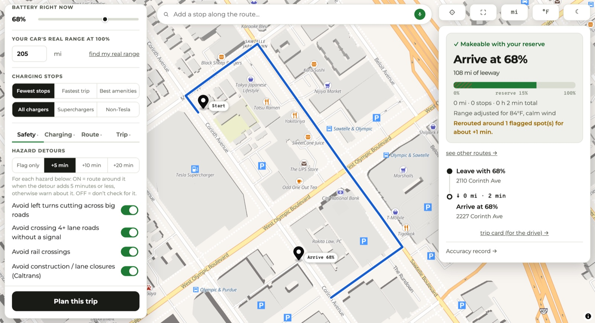
263 → 205 mi
The 2021 Model 3 it was built around, new and five years on. Plan from 263 and the second leg comes up short.
+5 min
The default detour budget. Any flagged spot it can avoid for five minutes or less, it avoids; the rest it warns about.
15% / 30 mi
The reserve floor, whichever is tighter for your car. No plan counts on going below it.
3 trips
Log three substantial trips and later plans start correcting toward how your car actually drives.
The problem
A 2021 Model 3 Standard Range Plus was rated at 263 miles new. The one this was built for now shows 205. Batteries lose capacity with age, and no two lose it at the same rate, so a planner working from the factory figure can hand you a charging stop you won't reach.
Leeway asks what your car does at 100% now and answers with how much room you will have on arrival. That margin is the name.
How far before the reserve floor
Leeway's own range formula and constants (backend/app/range_model.py), in its flat-road form. Real plans also walk the route's elevation profile, so hills change these numbers.
Main screen
Where you're going, what the battery reads now, and what the car does on a full charge. The verdict card stays empty until you press Plan this trip, then fills with the arrival number, a gauge and every stop in order.
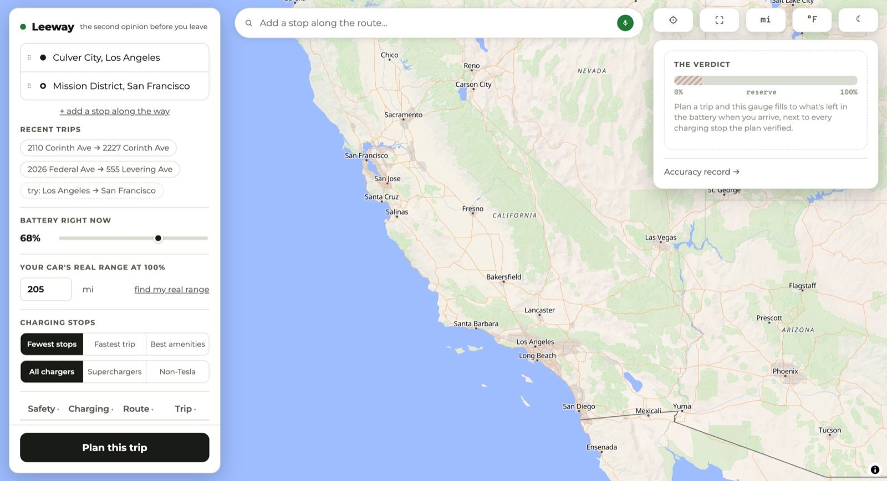
A plan
Los Angeles to Santa Barbara by way of the Getty: arrive at
62%
A 91-mile run with two stops, 2 h 49 min including about 48 minutes plugged in, 96 miles to spare, with range adjusted for 84°F and calm wind. The card's verdict line reads "Makeable with your reserve". Under it are the warnings for this route: a 9% grade descent a mile long with about 26 real bends after it, and a Caltrans lane closure on SR-2. It also says what it already did, which was to reroute around two flagged spots for a combined four minutes.
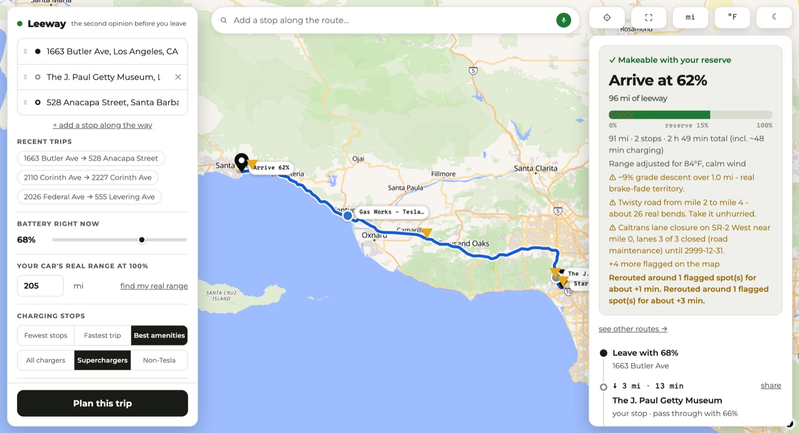
The same job on the East Coast: New York to Boston, 223 miles, a Tesla Supercharger in Connecticut and an EVgo outside Worcester, picked from whichever network is there.
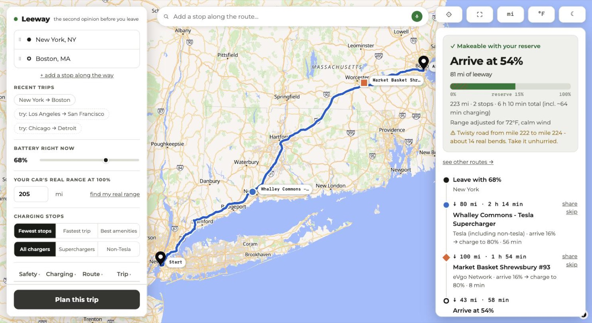
Safety
Four hazards, each with its own switch: left turns across big roads, unsignaled crossings of roads with four or more lanes, rail crossings, and active Caltrans construction in California. Beside them is a detour budget: flag only, or +5, +10 or +20 minutes. At +5, Leeway routes around any flagged spot it can avoid for five minutes or less and warns about the rest. +5 is the default, so someone who never opens the options is still steered around the cheap ones.
Signals, lane counts and rail crossings come from OpenStreetMap; closures from the Caltrans feed; turn geometry is measured off the route line itself. Steep descents, twisty sections, sun glare and strong wind get a warning and no reroute. When the OpenStreetMap servers are slow, a hazard check gives up rather than hold up the plan, so a flag can go missing.
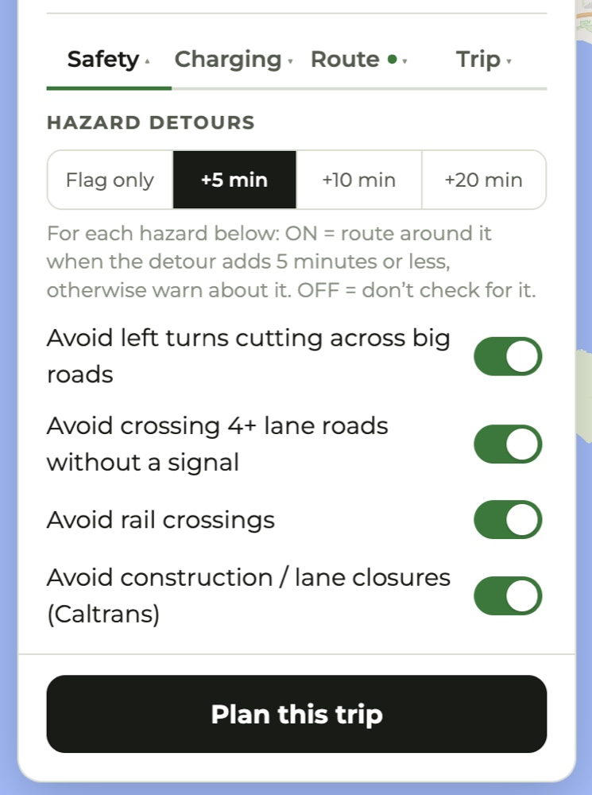
Settings
The defaults are already the cautious answer, so a good plan needs nothing in here touched. Each control says what it does and what it costs. A collapsed tab shows a dot when something inside differs from the default, so a changed setting can't hide.
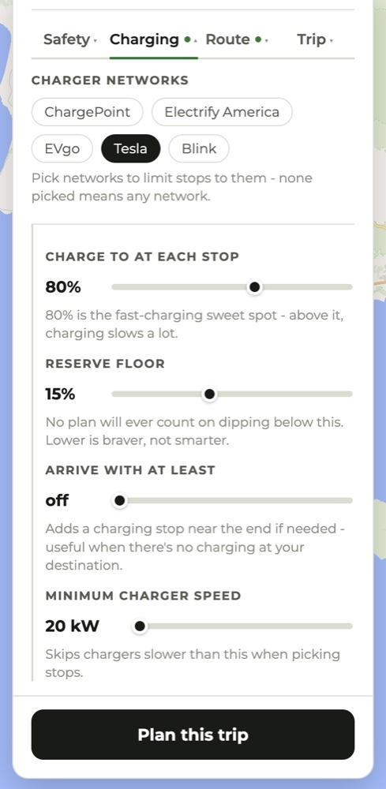
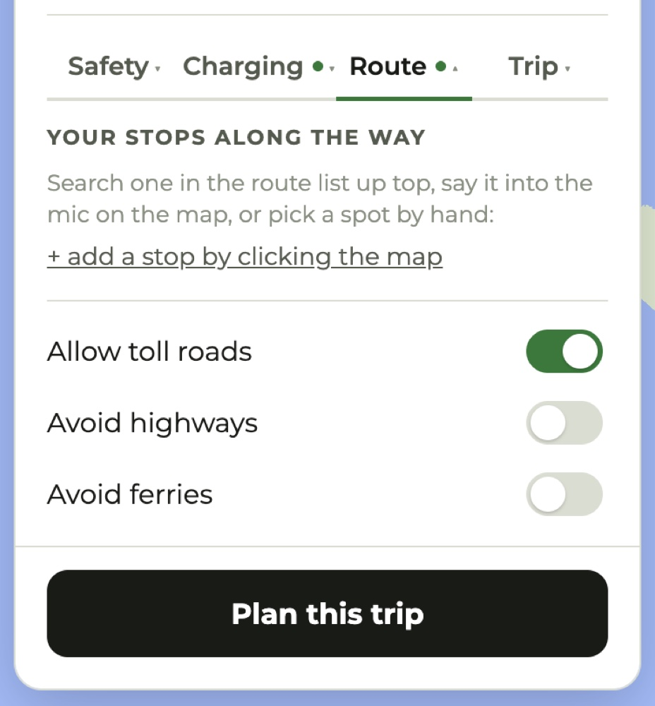
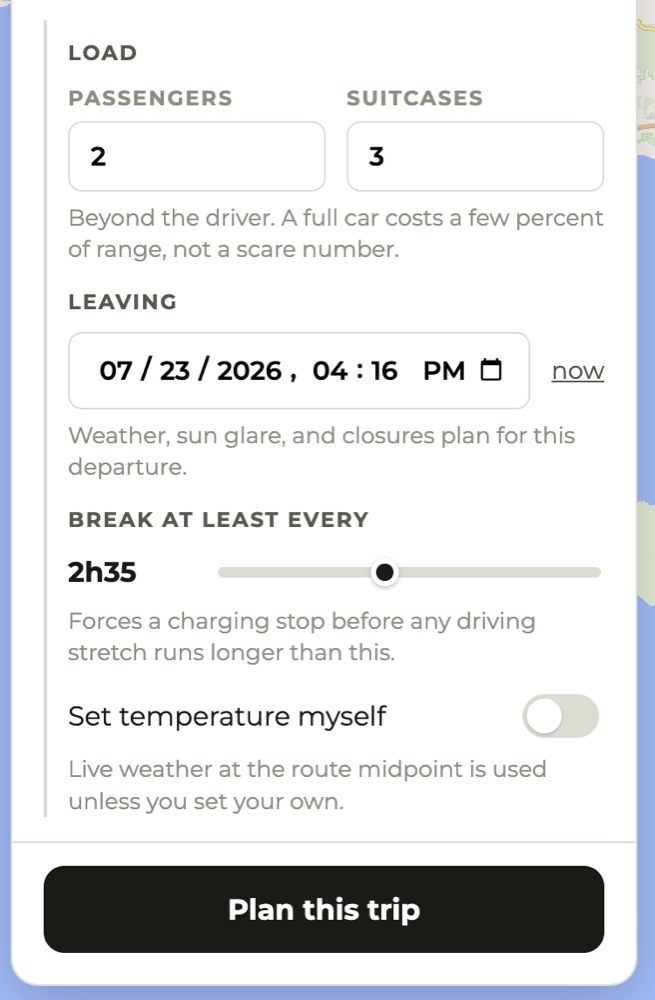
"No plan will ever count on dipping below this. Lower is braver, not smarter."
Helper text under the reserve floor
Finding a stop
Type or speak into the bar above the map: "Add an In-N-Out stop after one hour of driving." Gemini turns the sentence into a search, including the budget buried in it: "won't add much time" means five minutes, "I don't mind a longer detour" means twenty. Each result is priced by routing to the door and on to your destination, minus the drive you were making anyway, and the list is ordered by that cost. If nothing fits the budget it says so instead of widening it.
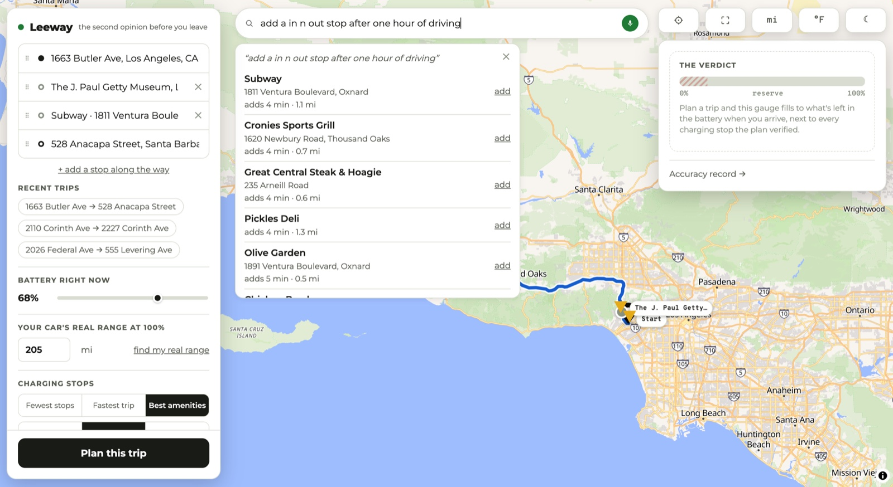
On the road, and after
The trip card cuts the plan to what you need behind the wheel: leave with 68%, the Getty at 3 miles, the Supercharger at 60 miles where you arrive at 25% and charge to 80%, then 28 miles to arrive at 62%. It fits on one screen so it can be screenshotted, because the car's own screen can't open a web app. Any stop can also go out as a maps link, which the Tesla app accepts.
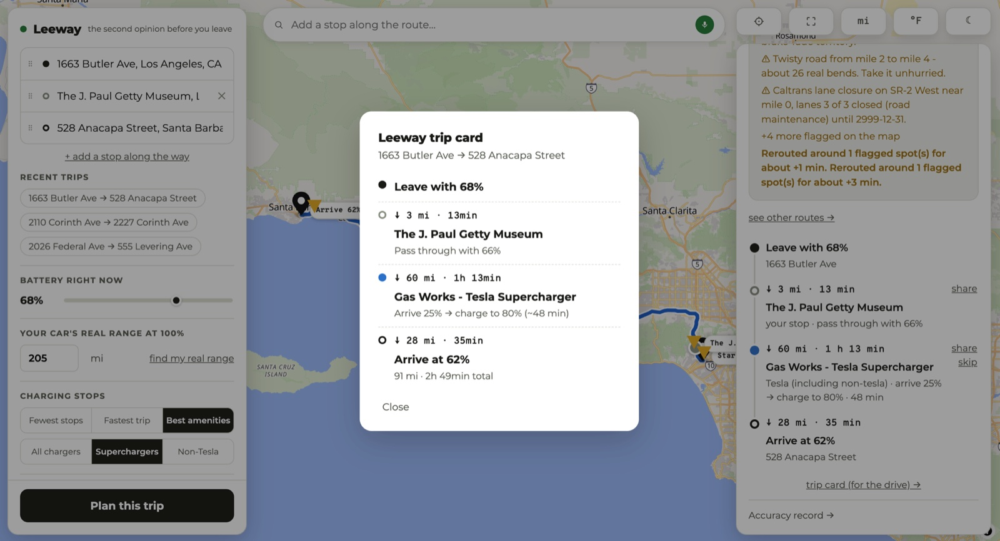
Next time you open Leeway it asks how the trip went and sets what happened beside what it predicted. After three or more trips that each used at least 10% of the battery, it starts correcting its estimates toward your car, weighting recent trips more. The correction is lopsided on purpose: a car that used more than predicted gets the full correction, one that used less gets half, and plans never get more than 10% bolder than the stock estimate. When a correction is in use, the plan says so.
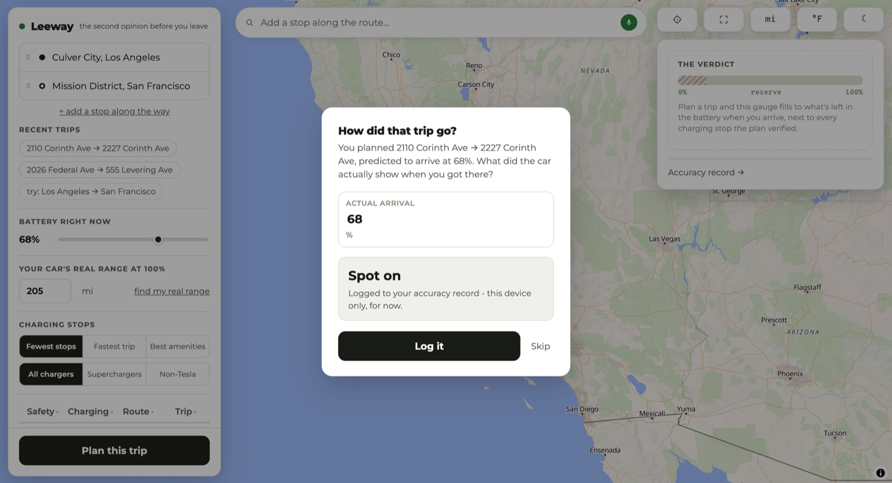
Sample trips on a first visit are labeled "try:" so nobody mistakes them for their own history. When the routing quota runs out, the verdict says planning couldn't run instead of echoing your starting battery back as an answer.
Smaller things
Built on
Free, on free infrastructure, covering the mainland US.